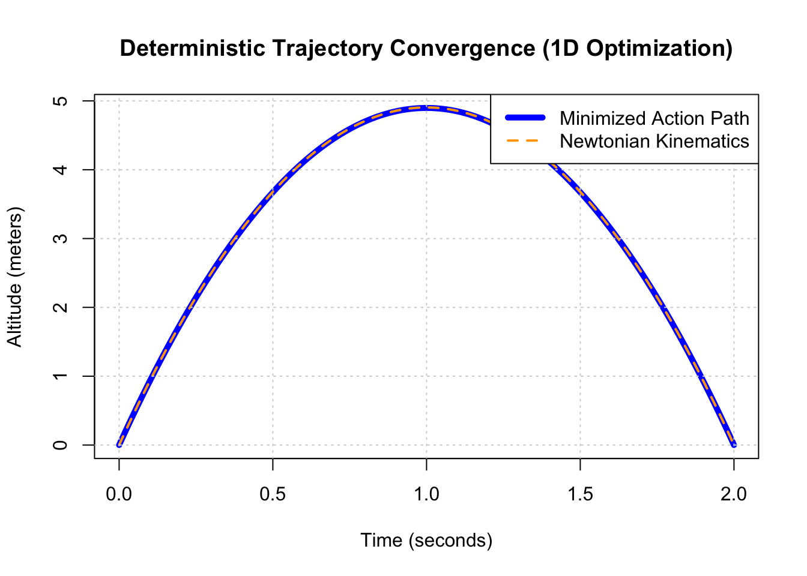

set.seed(42)
# 1. Physics Parameters
m <- 1.0 # Missile mass (kg)
g <- 9.81 # Gravity (m/s^2)
t_max <- 2 # Total flight time (seconds)
vx <- 10 # Fixed horizontal velocity (travels 20m in 2 seconds)
# 2. Action Cost Function
calculate_action <- function(k) {
dt <- 0.001
t <- seq(0, t_max, by = dt)
# Parametric path shape controlled by k
y <- k * t * (t_max - t)
vy <- k * (t_max - 2 * t)
# Energies
T_eng <- 0.5 * m * (vx^2 + vy^2)
V_eng <- m * g * y
L <- T_eng - V_eng
return(sum(L * dt))
}
# 3. Optimize the single scalar 'k'
opt_res <- optimize(f = calculate_action, interval = c(-20, 20))
best_k <- opt_res$minimum
# 4. Generate comparison curves
t_plot <- seq(0, t_max, by = 0.01)
y_action <- best_k * t_plot * (t_max - t_plot)
# Exact analytical Newtonian path (F = ma)
v0y <- 0.5 * g * t_max
y_newton <- (v0y * t_plot) - (0.5 * g * t_plot^2)
# 5. Plot Comparison
plot(t_plot, y_action, type = "l", col = "blue", lwd = 5,
xlab = "Time (seconds)", ylab = "Altitude (meters)",
main = "Deterministic Trajectory Convergence (1D Optimization)")
lines(t_plot, y_newton, col = "orange", lty = 2, lwd = 2)
grid()
legend("topright", legend = c("Minimized Action Path", "Newtonian Kinematics"),
col = c("blue", "orange"), lty = c(1, 2), lwd = c(5, 2))